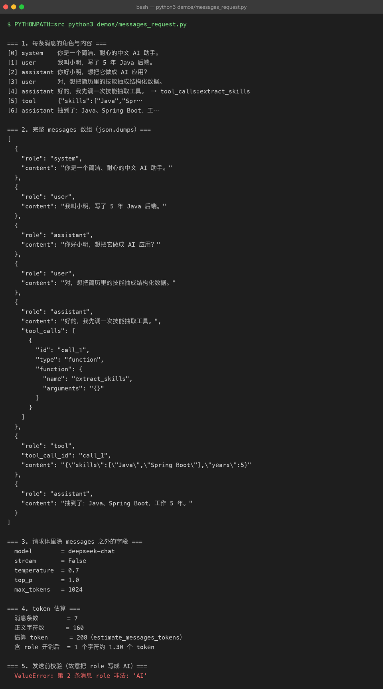
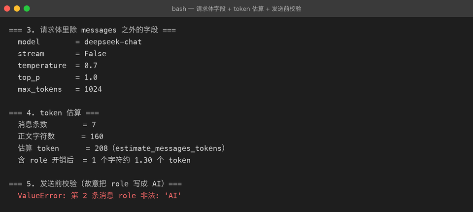

Project 03 — Chapter 02：System / User / Assistant Messages【消息结构】
状态：✅ 已校对 对应代码：
src/assistant/memory.py（Conversation）
1. 项目要增加什么能力
Chapter 01 解决了「提示词怎么写」，这一章解决「提示词怎么送过去」。
Project 02 里已经有消息结构了，但只用到两种角色：
# P02 conversation.py
self._messages: list[dict[str, str]] = []
if system_prompt:
self._messages.append({"role": "system", "content": system_prompt})现在要支持完整的四种角色，并回答一个关键问题：
为什么必须把模型自己说过的话再发回去？
本章目标：
正确地构造、累积、校验 messages，让多轮对话和工具调用都能正常工作。
2. 为什么需要这个知识
大模型 API 是无状态的。这一点怎么强调都不过分：
你以为： 模型记得上一轮聊了什么
实际上： 模型每次只看到你这次发过来的 messages 数组所以「多轮对话」这件事，本质上是客户端在伪造记忆——每一轮把完整历史重新发一遍。
这意味着 messages 数组就是 AI 应用最重要的一个数据结构：
messages 拼错了 → 模型表现诡异，而且很难定位
（因为错误不在代码里，在数据里）3. 核心概念
3.1 四种角色
| role | 谁产生的 | 作用 |
|---|---|---|
system | 你 | 全局人设与规则，一般只在开头出现一次 |
user | 你（用户） | 这一轮的输入 |
assistant | 模型 | 模型上一轮的回答；工具调用时承载 tool_calls |
tool | 你（执行工具后） | 把工具执行结果回灌给模型，靠 tool_call_id 对应 |
3.2 一次多轮对话的真实报文
第 1 轮：
[
{"role": "system", "content": "你是一个简洁的中文助手。"},
{"role": "user", "content": "我叫小明"}
]模型回：{"role": "assistant", "content": "你好小明，有什么可以帮你？"}
第 2 轮（注意：三条都要发）：
[
{"role": "system", "content": "你是一个简洁的中文助手。"},
{"role": "user", "content": "我叫小明"},
{"role": "assistant", "content": "你好小明，有什么可以帮你？"},
{"role": "user", "content": "我叫什么名字？"}
]assistant 那条是自己上一轮的回复，必须回灌。 少了它，模型就不知道自己说过什么，也不知道「小明」是谁说的。


3.3 代码里怎么累积
@dataclass
class Conversation:
_system: str = ""
_turns: list[dict[str, str]] = field(default_factory=list)
def add_user(self, content: str) -> None:
self._turns.append({"role": "user", "content": content})
def add_assistant(self, content: str) -> None:
self._turns.append({"role": "assistant", "content": content})
def add_tool(self, tool_call_id: str, content: str) -> None:
self._turns.append({"role": "tool", "tool_call_id": tool_call_id, "content": content})
def to_messages(self) -> list[dict[str, str]]:
head = [{"role": "system", "content": self._system}] if self._system else []
return head + list(self._turns)关键设计：to_messages() 返回的是副本（list(self._turns)），外部拿去改也改不动内部状态。
3.4 一条消息该不该被信任
messages 是会被多处修改的共享数据，写个校验器很划算：
def validate_messages(messages: list[dict]) -> None:
if not messages:
raise ValueError("messages 不能为空")
for i, m in enumerate(messages):
role = m.get("role")
if role not in {"system", "user", "assistant", "tool"}:
raise ValueError(f"第 {i} 条消息 role 非法: {role!r}")
if role == "tool" and "tool_call_id" not in m:
raise ValueError(f"第 {i} 条 tool 消息缺少 tool_call_id")
if "content" not in m and "tool_calls" not in m:
raise ValueError(f"第 {i} 条消息既没有 content 也没有 tool_calls")在发送请求前调用它，能省掉大量「模型为什么答非所问」的排查时间。
4. 项目代码
src/assistant/
├── memory.py # Conversation：add_user / add_assistant / add_tool / to_messages
├── schema.py # Message 类型别名（Chapter 03 用）
└── client.py # 发送前调用 validate_messages()调用链：
用户输入
↓ Conversation.add_user()
Conversation.to_messages()
↓ validate_messages()
client.chat(messages) ← 模型
↓ 拿到 assistant 消息
Conversation.add_assistant() ← 回灌，下一轮才能带上5. Java ↔ Python 对比
| Java | Python | 说明 |
|---|---|---|
List<Map<String,String>> | list[dict[str, str]] | 同（Python 更常用 TypedDict 约束） |
DTO / record Message(String role, String content) | @dataclass 或 TypedDict | Python 里 dict 更贴合 JSON 契约 |
| HTTP 是无状态的（靠 Cookie/Session） | LLM API 无状态（靠 messages） | 完全同构 |
Bean Validation @NotNull | validate_messages() | 同样的前置校验思路 |
| Jackson 序列化顺序 | json.dumps(ensure_ascii=False) | Python 默认转义中文，要关掉 |
最贴切的类比：
messages ≈ HTTP 请求体 + Session。 模型没有服务端状态，每次请求必须自带全部上下文，就像 JWT 无状态鉴权每次都要带上完整的 token。
6. 常见坑
坑 1：忘了回灌 assistant 消息
conv.add_user("我叫小明")
reply = await client.chat(conv.to_messages())
conv.add_user("我叫什么名字？") # ❌ 少了 add_assistant(reply)
reply2 = await client.chat(conv.to_messages()) # 模型：我不知道你叫什么这是多轮对话最常见的 bug。 表现是「模型记性好时好时坏」，其实是根本没把记忆发出去。
坑 2：每一轮都重复插入 system
conv.add_system("你是一个助手") # 每一轮都 append
conv.add_system("你是一个助手")
conv.add_system("你是一个助手") # ❌ 三份 system，白烧 tokensystem 应该只存在一份，由 to_messages() 负责拼在开头。
坑 3：role 拼错
{"role": "AI", "content": "..."} # ❌ API 直接 400
{"role": "human", "content": "..."} # ❌ 这是 LangChain 的写法，不是 OpenAI 契约坑 4：tool 消息的 tool_call_id 对不上
坑 5：裁剪历史时切在工具调用中间
当历史太长需要裁剪（Chapter 05）时，如果截掉了 assistant(tool_calls) 但留下了 tool 消息，协议就坏了。
规则：
裁剪以「一轮完整交互」为单位，不要以「单条消息」为单位。
7. 实战挑战
挑战 1：实现 validate_messages()，并在 client.chat() 里调用——让非法消息在发送前就失败。
挑战 2：给 Conversation 加 last_n_turns(n)，只保留最近 n 轮（system 始终保留）。
挑战 3（进阶）：支持 tool_calls 结构（Chapter 08 会用到），让 add_assistant() 既能存纯文本也能存工具调用。
8. 主动回忆
- 为什么多轮对话必须把 assistant 的历史回复再发一遍？
- 四种 role 分别由谁产生、作用是什么？
to_messages()为什么要返回副本？- system 消息应该出现几次？放在数组的什么位置？
- tool 消息靠什么字段与工具调用对应？
- 裁剪历史时，为什么不能以单条消息为单位？
9. 本节完成标准
- [ ] 多轮对话能稳定记住上一轮的内容（有真实调用验证）
- [ ]
to_messages()返回副本，外部修改不影响内部 - [ ] 发送前有消息校验，非法 role 会直接报错
- [ ] system 消息全会话只存在一份
- [ ] 已支持
tool角色与tool_call_id（为 Chapter 08 做准备）
下一章：03-structured-output.md —— 让模型的输出能被程序直接消费。